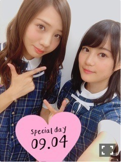

2016/0929Thuヤンジャン〜don♪448
こんにちは
本日発売のヤンジャン
表紙をさせていただいてます！
写真集「転調」から約1年
全く同じ撮影チームで
宮古島に行ってきました☆
海ー！
天気も快晴っ
開放的でのびのび
すごく楽しかったぁ！
雑誌の撮影なのにシュノーケリングもしたよー笑
サンゴ綺麗〜〜
ウェットスーツ
あとね！
乃木中の夏休み課題の三線
わざわざ持ってって弾いたよ〜
紙面にも写ってます(^^)
何より今回
また転調チームに撮ってもらえたことが
すごく嬉しかったです。
いくら感謝があっても足りない！
あれから変わったことなど
今までで一番ボリューミーな1万字インタビューも
載せていただいてます。
ぜひ写真見ながら
文も読んでもらえると嬉しいです♪
エリカ(。・∀・。)☆彡
2016/0919Mon聲の形〜don♪447
こんにちは
一昨日は名古屋でセブンライブ
昨日は全握でした！
来てくださったみなさん
ありがとうございます。
全握ミニライブでは
「命の真実」ゲストにちはる王子をお迎えしました♪

見た目はかっこいいのに動きが面白かったーー
次回は誰なのか...
おたのしみに〜
あ、そういえば髪を切りました。
思ったよりも短くなっちゃって
初期のボブって感じに戻った！
みなさんに褒めていただけたのでよかったぁ
でも成人式のこと忘れてたの。
早く伸びますようにー>_<
ここからちょっと話飛ぶのだけど
先日発売になったからあげウォーカーに載せていただいてます！
からあげ姉妹というユニットをやらせていただいているので嬉しかったー！
いっぱいからあげ食べられて最高でした☆

姉さんのさゆりんはスケジュールの都合で出られず
すごく残念がってました(T_T)
今年はからあげ姉妹、バースデーライブ以外何の活動もできてないから
また一緒に何かできたらいいなっ
そして
漫画を読んでからずっと気になっていた
映画「聲の形」
観てきました！
耳が聞こえない西宮硝子と
幼い頃に彼女を傷つけた石田将也の
再会と成長を描く物語。
映画には音がのるので
漫画ではわからなかったものも
より繊細に伝わってきました。
硝子の言葉にならない叫びに胸を打たれた(;_;)
あと永束くんの声が面白いなぁと思いながら見てたら
ロミジュリのマーキューシオ役の小野賢章さんだと知ってびっくり。
声優さんってすごいなぁ...と改めて思いました。
これからMステスペシャル生放送！
久々のぐるカー披露です。
初心を思い出しながら披露してきますっ
エリカ(。・∀・。)☆彡
2016/09/19 14:10｜個別ページ｜コメント(1068)
2016/0913Tue明洞〜don♪446
こんばんは
三日間のお休みをいただいて
韓国に行ってきました！
父母と。
いっぱい買い物して楽しかった〜♪
グルメももちろん
ソルロンタン、焼肉、タッカンマリなどなど
たらふく食べましたっ
古き良き街も散策しました。
「NANTA」っていうショーを観たんだけど
すっっごい面白かった！！
客席参加型で楽しいし
ずっと笑いっぱなしでした♪
そしてパフォーマンスがとにかく凄い！圧巻！
みなさんも韓国行った際はぜひ見てくださいっ
最後はコルギマッサージ
初めてやったんだけど
痛気持ちよかったーー
ここツボーってとこドンピシャで
すごかったです。
いい旅でした〜
仕事や色んな練習がんばろっ
エリカ(。・∀・。)☆彡
2016/0908Thu炊飯器〜don♪445
こんばんは
今日は1日マネージャーまゆこといたよ〜
まずは仕事からの
森美術館で「ルーヴル No.9 ～漫画、9番目の芸術～」みたよー
9番目の芸術とされる漫画がルーヴルをテーマに描かれていました。
個性ある漫画タッチが面白かったし
実際にルーヴル美術館行ってみたくなった！
そしてカフェでスムージー飲んでから
映画「君の名は。」観ました♪
周りからすごくいいと聞いて気になってたのですが
本当観てよかった！！
画が綺麗でうっとり
たくさん胸がキュンとしました。
充実した一日だった〜
でもまゆこと私2人で歩くと必ず道迷うんですよね。
本来3分で着くのに遠回りしちゃって15分かかったりとか
扉出て着いたー！と思ったら反対側の扉から同じとこに戻ってたりとか
大変でした。。
六本木ヒルズ
私たちには早すぎたようです。
まゆこありがとう(o^^o)
そういえば
突然ですが
象印の炊飯器「極め羽釜」のCMに
フィンランド民謡Ievan PolkkaのBGMが流れていることは
ご存知ですか？
私もCMで耳にするたび
心の中で一緒に歌って
勝手に親近感を覚えていました。
すると先日
象印さんからぜひ羽釜を使ってくださいと
いただいちゃいました！！
重厚感たっぷり
さっそく羽釜で炊いたお米を食べました！
格別！！
つややかで味も美味しくて
ご飯を食べるのがより楽しくなりました♪
羽釜さんは頭がいいので
毎日かたさや粘りといった炊き上がりの感想ボタンを押すと
ちゃんと翌日微調整してくれるんですよ〜
我が家流の味を作ってくれる！
象印さん、ありがとうございます。
お手紙もいただいたのですが
ファンのみなさんからの声が担当者の方に届いていたみたいです。
気づいてくださったみなさん
ありがとうございます！
おしらせ
明日9日21時〜
高校生クイズにスタジオ出演します。
高校生のみなさんの頑張りや絆
思わず自分も手に汗握っちゃうくらい緊張と感動しました。
今回応援させていただけたこと
本当に嬉しかったです。
みなさんにもぜひ見ていただきたいっ
スタジオトークも和気あいあいとしてて
楽しかったぁ
エリカ(。・∀・。)☆彡
2016/0905Mon制作発表〜don♪444
こんばんは
今日はロミジュリ制作発表でした！
もうっ 緊張しすぎましたっっ
前日から初めて食事が喉を通らない感覚を味わったくらい>_<
盛りだくさんな1日
新しいことばかりで
今までのグループでの5年間とは全く違う世界でした。
1から学ばせていただく姿勢で頑張っていきたいと思います！
不安もいっぱいありますが
本当に大好きな作品に出られることが幸せですし
素敵なチームワークを感じたので
楽しんでポジティブにできたらいいなぁ。
ちなみに今日は緊張とバタバタでご飯食べられなかったので
バナナ3本も食べました笑
ダブルキャストの木下晴香ちゃん
昨日今日を通してぐっと仲良くなれて嬉しい♪
私より年下なのだけど落ち着いてて
歌も心に沁みて
逆に教わることが多くなりそうです。
私本当に頼りないけど
お互い支え合ってジュリエットを作っていけたらいいなぁ。
ずっとあたふたしてて
写真撮れなかったので
名前だけツーショット笑
次会える稽古まではまた時間が空きそうなので
ご飯とか行きたいな〜(o^^o)
あ、そうそう
神父さまの坂元健児さんとの写真が届きましたっ
集合〜♪
改めて ありがとうございました！
先日の全握ミニライブでの「命の真実」は
振り付けver.で
ゲストにあみ王子をお迎えしました☆

ありがとう！
振り付けしてくださったのは
MVと同じのTETSUHARUさん
だいぶコミカルな演出になったよ笑
名古屋、京都と
日替わり王子になりますので
誰がくるのか おたのしみに〜
乃木中夏休み課題の三線
本番もうすぐorz
練習しなきゃ...
エリカ(。・∀・。)☆彡